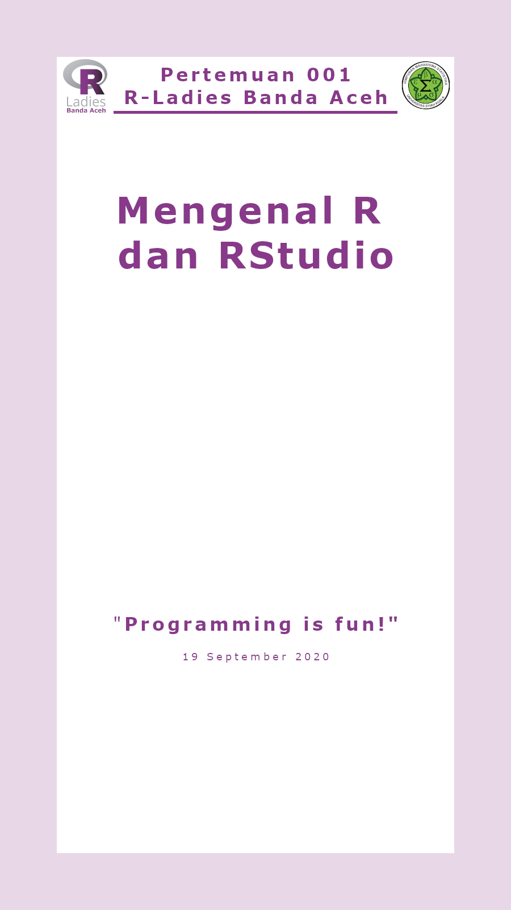
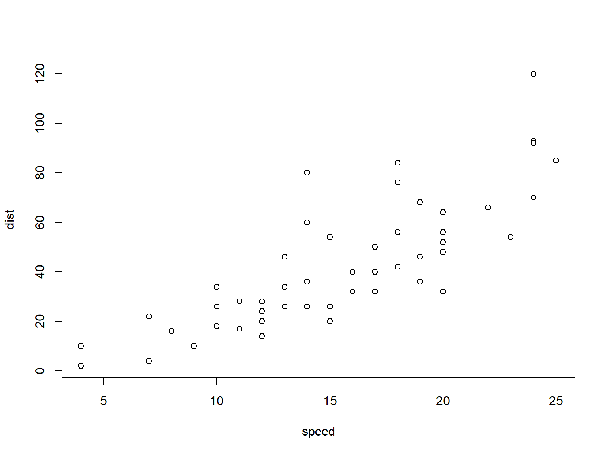

program/prog·ram/ n 1 rancangan mengenai asas serta usaha (dalam ketatanegaraan, perekonomian, dan sebagainya) yang akan dijalankan: beberapa partai menyetujui – pemerintah; 2 Komp urutan perintah yang diberikan pada komputer untuk membuat fungsi atau tugas tertentu; pemrograman/pem·rog·ram·an/ n proses, cara, perbuatan memprogram From https://kbbi.web.id/program
https://repo.bppt.go.id/cran/ https://rstudio.com/products/rstudio/download/#download https://repo.bppt.go.id/cran/bin/windows/Rtools/

## height weight
## Min. :58.0 Min. :115.0
## 1st Qu.:61.5 1st Qu.:124.5
## Median :65.0 Median :135.0
## Mean :65.0 Mean :136.7
## 3rd Qu.:68.5 3rd Qu.:148.0
## Max. :72.0 Max. :164.0